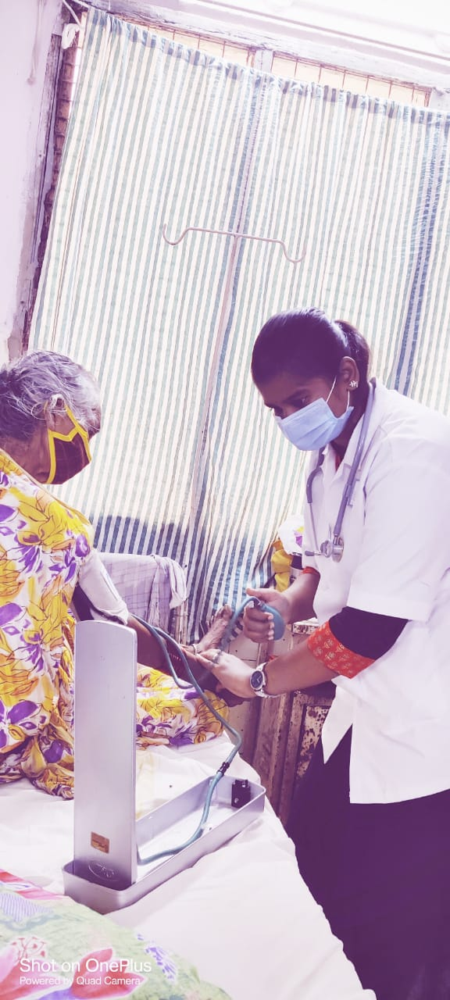
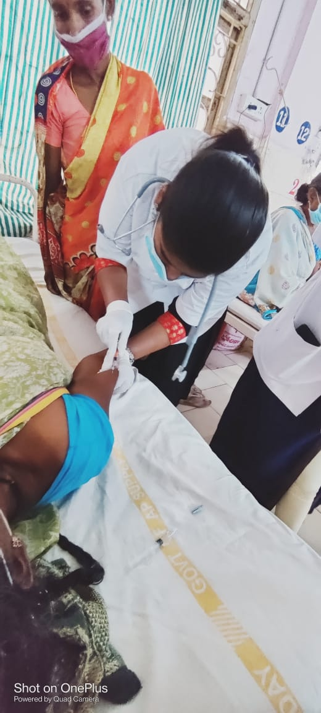

Internship
Internship at Government General Hospital (GGH), Kakinada, India, with rotations in various departments such as cardiology, Neurology, community medicine, physiotherapy, general medicine, and general surgery, orthopedic.

